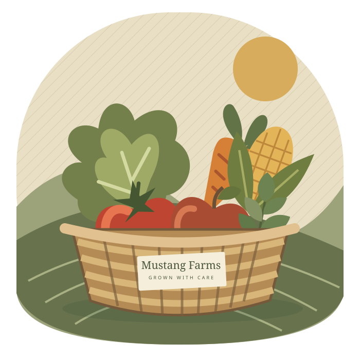
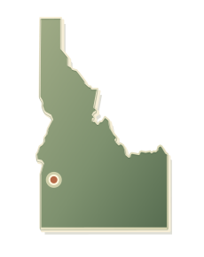

See what's growing
See the kinds of produce Ed plans to have at the stand. The selection changes with the season.
Ed is learning his way around the garden one season at a time. The weather sets the pace, and there's always something new to figure out.

Picked here.
Shared nearby.
The garden changes with the weather. Here's a look at the produce Ed can bring to the stand.
These are example listings, not current stock. Pickup orders aren't open yet.
A small garden has its own rhythm. Some weeks are spent planting and tending; others are about seeing what's finally ready to come out of the ground.
A small farm in southwest Idaho.
MERIDIAN, IDAHO
Ed Sperry spent 22 years in the military. After that, he decided to give farming a try.
He's been growing for about a year, figuring things out as he goes. He's learned from YouTube, asked questions, and spent plenty of time doing the work himself. The garden is still a learning experience, and Ed doesn't pretend otherwise.
See the kinds of produce Ed plans to have at the stand. The selection changes with the season.
Choose a few items and try the basket. The ordering feature is a demonstration for now.
When pickup orders open, Ed will confirm the details before you come by.
Not yet. The basket can be tried with sample information, but requests stay in your browser and are not sent to Ed. Please don't use real contact details for now.
Mustang Farms is in Meridian, Idaho. Confirmed pickup directions and hours will be added before real orders open.
Not yet. The items, prices and quantities shown are examples. Ed will replace them with his available harvest when he begins taking pickup orders.
No online payments are being taken. Ed will share payment and pickup details when ordering opens.
Ed's garden changes from one season to the next. Stop by here to see what's new.
Browse the harvestProduce, stock, and pickup requests, all in one place.
Add produce, update prices, or change what's in stock.
Every test order appears here automatically. Tap a button to move it along.
This is a demonstration dashboard. Changes aren't saved after a refresh.